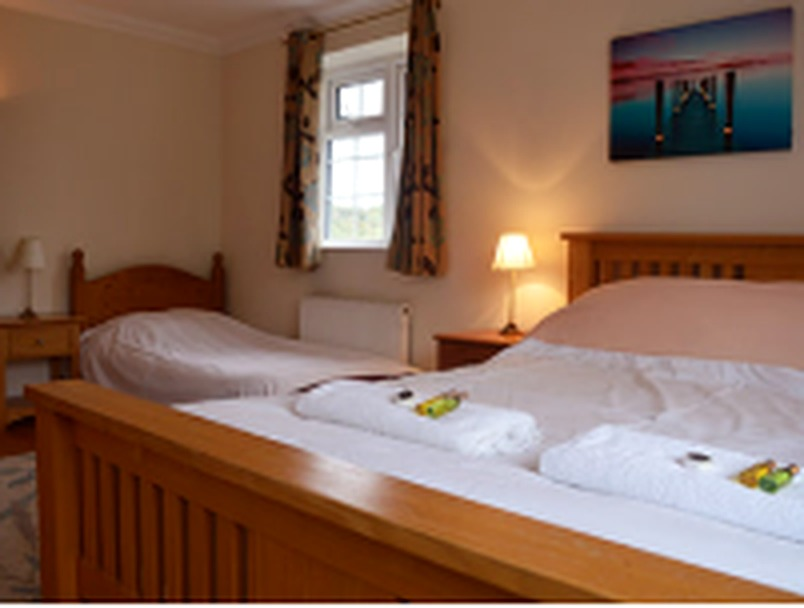

Bed & Breakfast
En-suite B&B rooms
Three cosy en-suite bedrooms with colour TV and tea & coffee making facilities, set in a quiet garden setting.
- Three en-suite bedrooms
- Colour TV
- Tea & coffee making facilities
- Quiet garden setting
- Free car parking